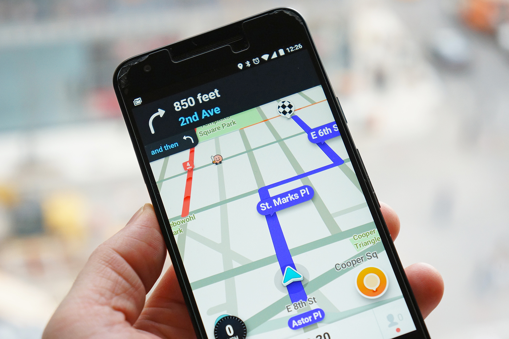

Pensando em facilitar o dia a dia de uma parcela da população que utiliza cão guia, bengala ou até mesmo de uma pessoa como acompanhante, o AATUL(Aplicação de Acessibilidade à Vida Urbana) chega para mudar esse cenário. Além de possuir um sistema de sonoro de avisos e vibrações, permite que os usuários ajudem a modificar o mapa, melhorando a experiência de uso da aplicação. Além desses recursos, permite compartilhar sua localização em tempo real com seus familiares, mostrando a preocupação com a seguranção dos usuários.
Acessibilidade significa permitir que as pessoas com deficiência e com mobilidade reduzida, possam realizar suas atividades de modo mais eficiente e de uma melhor forma. Nosso aplicativo abrange pessaos com deficiência visual, contendo funções de localização, direção e até mesmo para um passeio casual. O aplicativo AATUL desenvolvido para esse público vem ajudar as pessoas com deficiência visual informando-as tudo que haverá em sua frente, e ao seu lado, baseado em sua localização atual, de acordo com seu GPS(sistema que através de satélites mostra a posição de uma pessoa ou objeto em qualquer lugar do mundo).
Desenvolver um aplicativo(app) capaz de localizar pessoas com deficiência visual no mundo real, localizando-as e comunicando-as o que está ao seu redor mantendo-as conectadas com o seus familiares e demais usuários desse sistema.
Ao iniciar a aplicação, carregará uma mensagem de áudio dando boas vindas ao usuário e o localizando. Além disso o aplicativo o questionará sobre o local onde ele deseja se locomover. Quando o usuário selecionar o destino, o app o coloca em rede com o mapa via gps e dados móveis guiando o usuário até o seu destino via sistema de sons e vibrações, alertando sobre obstáculos e trânsito ao seu redor em seu smartphone. O app permite que o usuário edite o mapa para melhorar a experiência de outros usuários, onde as informações são verificadas pela equipe de manutenção do sistema. Um dos recursos que a aplicação irá conter,é a possibilidade de compartilhar a sua localização com seus familiares, assim como minimizando possíveis perigos que estejam ao redor do usuário. Abaixo seguem alguns exemplos das notificações que o aplicativo terá:
Menseguem de boas vindas:
Confirmação de trajeto:
Avisos durante o trajeto:
Mensagem quando o usuário chegar ao destino:
Permissão para o app compartilhar sua localização com seus fimiliares:
A seguir, seguem algumas imagens da interface do app e de seu acessório adicional:

O grupo espera que o aplicativo mude a forma que os usuários se locomovem, agilizando o caminho pensando sempre em sua segurança e evitando as seguintes situações:
Com a utilização de uma mapa da comunidade virtual, a quantidade de informações valiosas para melhorar o uso será de grande valor, aumentando a qualidade nas rotas para os usuários.O sistema de compartilhamento de localização com familiares pode ser um item essencial, pensando na segurança dos usuários e na sua autonomia.
O oplicativo pode ter algumas restrições de funcionamento, tais como, falhas na conexão de GPS e internet. Outro problema que pode ser relatado é a incompatibilidade com os sistemas operacionais, causando travamentos e mau funcionamento. Com os sistemas de mapas compartilhados o risco poderá ser ainda com relação as falsas informaçoes, necessitando de equipe especializada para a verficação dos dados.